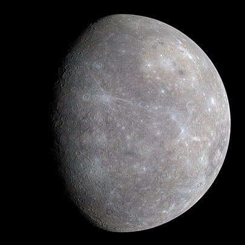

Merkur ist mit einem Durchmesser von knapp 4880 Kilometern der kleinste, mit einer durchschnittlichen Sonnenentfernung von etwa 58 Millionen Kilometern der sonnennächste und somit auch schnellste Planet im Sonnensystem. Er hat mit einer maximalen Tagestemperatur von rund +430 °C und einer Nachttemperatur bis −170 °C die größten Oberflächen-Temperaturschwankungen aller Planeten.
